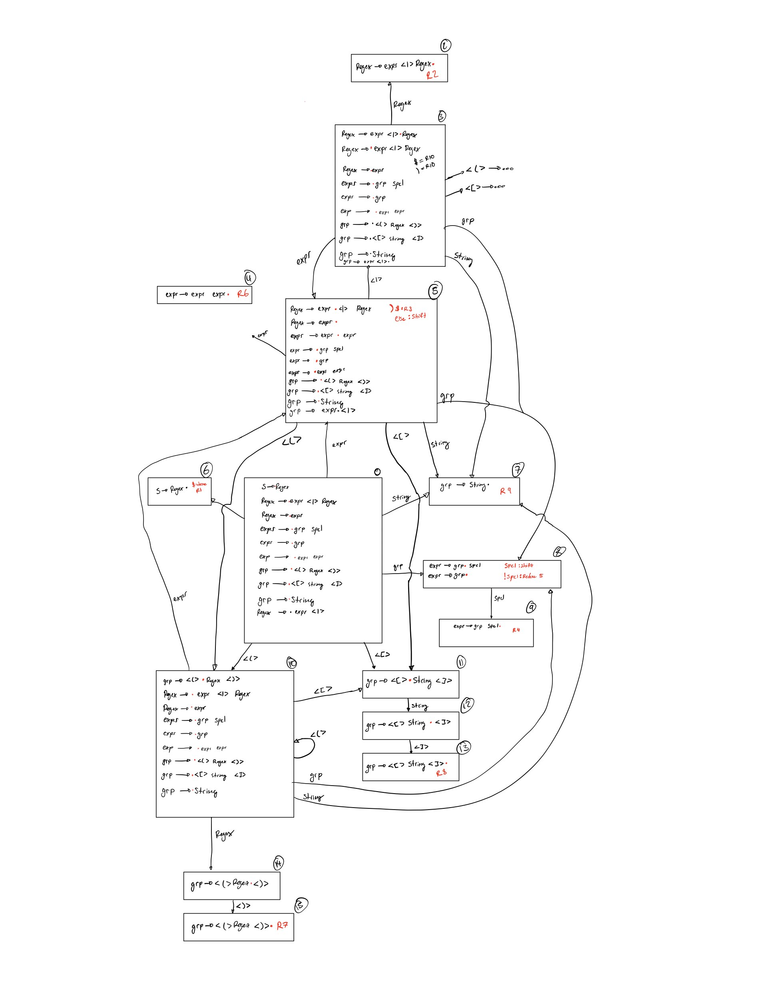

Mini-regex
Coverage
For use on ASCII strings. Supported special characters:
| Character | Meaning |
|---|---|
| | | OR two possible matches |
| * | Repeat the previous group 0 or more times |
| + | Repeat the previous group 1 or more times |
| ? | Match to previous group or skip |
| ( ) | Start grouping/end grouping |
| [] | Match to a caracter set |
Not supported right now:
- Macros of common character sets (ie: \w \d ... ext)
- Repeat grouping N times operation {N}
- Inverse of character set [^x]
- Match to start or end of string ($ / ^)
Character sets:
Character sets will take the inside of the brackets as a literal. If there is a dash (-) then the range between the two ASCII codes will be taken.
Usage
#include "miniregex.h"
miniregex_t x;
int ret = make_regex("aa|b+|[ac]*", &x);
if(ret != 0){
//...
}
if(match_regex(x, "...")){
printf("String matches\n");
} else{
printf("String does not match\n");
}
Build
meson setup build
meson compile -C build
Implementation
1. Tokenization
The first stage will be to convert the input regular expresion into a list of tokens. Their type will be one of the following:
- STRING - string of consecutive normal characters
- SPCL - special characters that operate on a group - * / + / ?
- CCL/CCR/SQR/SQL - left and right for both types of bracket
- NULL - end of the string
2. Creating the Parse Tree
Next the regex string will be parsed with a LR(1) parser.
The below grammar was used for parsing. The parse table was generated using the state diagram shown below.
- S -> Regex
- Regex -> expr <|> Regex
- Regex -> expr <|> Regex
- Regex -> expr
- expr -> grp spcl
- expr -> expr expr
- grp -> <(> Regex <)>
- grp -> <[> string <]>
- grp -> string
3. Convert to AST
Using the parse tree, a abstract syntax tree can be made to put the structure of the regext in a more usable form. This is done after the parse tree is completley made.
4. NFA creation and DFT conversion
Next a nondeterministic finite automaton (NFA) can be created out of the different levels of the AST. This can then be converted directly to a deterministic finite automaton (DFA) by merging states of the NFA repeatedly.
6. Regex traversal
In order to test a given input string, the DFA can be traversed by progresing to the next state if there is a edge that the input character matches too and if it ends on a finish state.
Complete parsing state diagram:
